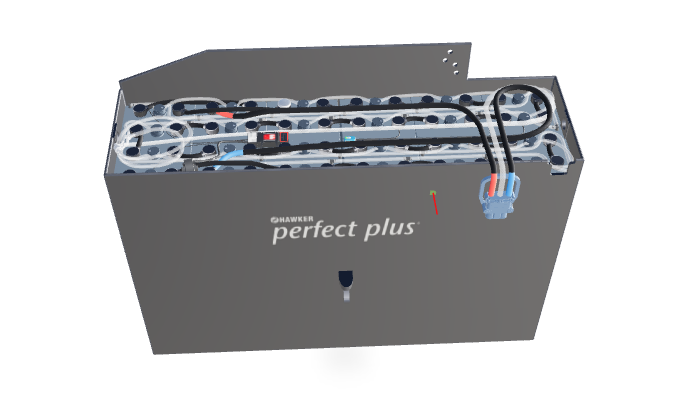

Image On The Left Side
Our info window provides seamless support for unlimited HTML content, effortlessly showcasing detailed, responsive elements such as video, audio, CSS styling, and more. Embrace versatility at its finest!
Elevate your experience with our 3D model viewer, designed for ultimate responsiveness. It seamlessly supports gltf, glb, and compressed DRACO format models, delivering stunning realism with realistic lights, environment maps, and shadows. Take your models to the next level by adding markers/hotspots, complete with tooltips and detailed info windows, built-in animation control, and customizable camera positioning, read more